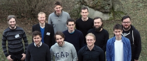

ZEUS Workshop 2015
Sixth Central European Workshop on Services and their Composition
February 19-20, 2015, Jena, Germany
Program
Thursday, February 19, 2015
- 9:15 Registration
- 10:00 Welcome
- 10:15 Keynote by Univ.-Prof. Dr. Stefanie Rinderle-Ma, Universität Wien. Change and Compliance in Cross-Organizational Process Scenarios
- 11:00 Coffee Break
- 11:15 Session 1
Daniel Ritter. Compilation of BPMN-based Integration Flows
Thomas M. Prinz Proposals for a Virtual Machine for Business Processes
Simon Moser IBM Bluemix - Making Service-oriented Architectures a Reality - 13:00 Lunch
- 14:00 Session 2
Timm Caporale A Method for Modeling and Analyzing Business Processes for Knowledge Carriers
Jonas Lehner Personal BPM – Bringing the Power of Business Process Management to the User - 15:00 Coffee Break
- 15:15 Session 3
Nico Herzberg and Matthias Kunze The Business Process Game
Felix Baumann and Dieter Roller BPM in German Companies - Information Gathering - 18:00 Social event, Guided tour Jena
- 19:30 Workshop dinner Zur Noll
Friday, February 20, 2015
- 09:30 Warm up
- 10:00 Session 4
Johannes Kretzschmar and Clemens Beckstein A Framework for Interactive Exception Management of Long-term Human-Involved Business Processes
Sebastian Apel, Thomas Prinz, and Volkmar Schau Challenging Service Extensions for Electric Vehicles in Massively Heterogenic System Landscapes
- 11:00 Coffee Break
- 11:15 Session 5
Oliver Kopp, Tobias Binz, Uwe Breitenbücher, Frank Leymann, and Thomas Michelbach A Domain-Specific Modeling Tool to Model Management Plans for Composite Applications
Marc Hüffmeyer and Ulf Schreier Efficient Attribute Based Access Control for RESTful Services
Christoph Hochreiner Privacy-Aware Scheduling for Inter-Organizational Processes - 12:45 Closing (Best Presentation Award)
- 13:00 Goodbye Lunch
